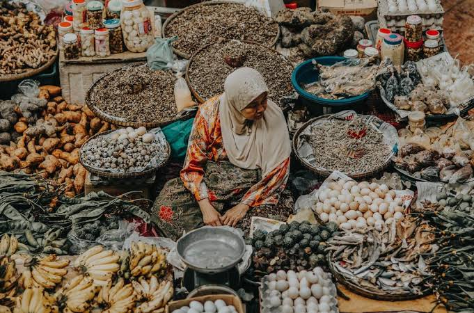
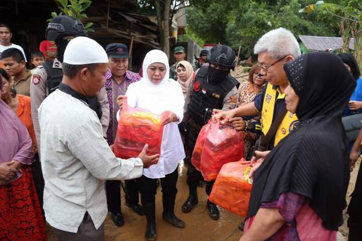
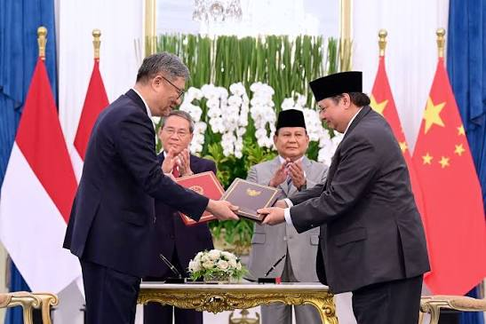
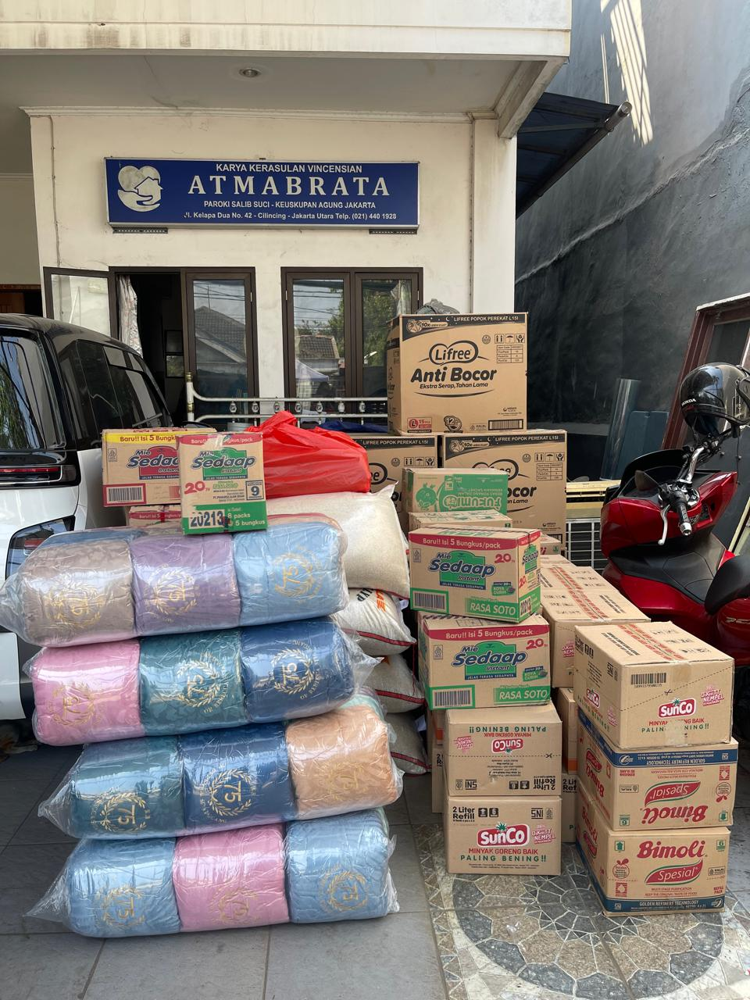

Analisis Permasalahan & Solusi
Kondisi Saat Ini
Di sekitar lingkungan tempat tinggal dan jalanan yang sering dilalui, masih banyak masyarakat berpenghasilan rendah, pedagang kecil, dan pekerja harian lepas yang hidup dalam keterbatasan ekonomi sehingga kesulitan memenuhi kebutuhan dasar sehari-hari secara layak.
Penyebab Utama
Kurangnya modal usaha, terbatasnya lapangan pekerjaan yang layak, rendahnya akses pendidikan serta keterampilan kerja, dan tingginya harga kebutuhan pokok yang sering kali tidak sebanding dengan penghasilan harian masyarakat kecil.
Dampak yang Ditimbulkan
Keluarga kurang mampu, pekerja harian lepas, dan anak-anak kesulitan memperoleh gizi yang baik serta tempat tinggal yang sehat dan aman. Selain itu, keberlanjutan pendidikan anak-anak terancam karena sebagian harus ikut membantu mencari nafkah.
Pihak yang Terkait
Pemerintah pusat dan daerah, lembaga sosial, pelaku UMKM, pihak sekolah, komunitas warga sekitar, serta setiap individu dalam masyarakat yang memiliki kepedulian sosial.
Solusi yang Dapat Ditempuh
Menggerakkan kepedulian sosial melalui donasi barang layak pakai (pakaian, buku, alat tulis) dan paket sembako, mendukung usaha mikro dengan berbelanja di pedagang kecil/UMKM sekitar, serta memperluas akses pendidikan dan pelatihan keterampilan.
Mengapa Membutuhkan Kerja Sama Antarnegara?
Kemiskinan tidak hanya terjadi di Indonesia, tetapi juga dialami berbagai negara berkembang dan kelompok rentan di dunia. Satu negara tidak dapat menyelesaikannya sendirian karena isu ekonomi berkaitan erat dengan kondisi ekonomi global, perubahan iklim, harga pangan dunia, serta keterbatasan dana dan metode penanganan. Melalui kerja sama antarnegara, berbagai negara dapat saling berbagi praktik baik, mendukung program pengentasan kemiskinan, dan mempercepat pencapaian SDGs.


Bukti Peran Aktif Indonesia dalam Kerja Sama SDG 1
Dalam kerja sama antarnegara untuk mendukung SDGs 1, Indonesia tidak hanya berperan sebagai penerima bantuan atau anggota pasif, tetapi juga mengambil peran aktif sebagai penggagas, pelaksana, dan mitra strategis:
Penggagas Inisiatif Kawasan (ASEAN Village Network)
Saat memegang Keketuaan ASEAN pada tahun 2023, Indonesia menggagas pembentukan ASEAN Village Network (AVN) di Labuan Bajo agar desa-desa di Asia Tenggara memiliki wadah kolaborasi untuk membangun kemandirian ekonomi dan menekan kemiskinan pedesaan.
Pelaksana dan Koordinator Program Nasional
Dalam kemitraan bilateral MAHKOTA bersama Australia, Indonesia tidak sekadar menerima dana, melainkan bertindak sebagai pelaksana utama melalui TNP2K yang mengoordinasikan 16 kementerian dan lembaga untuk mereformasi sistem perlindungan sosial nasional.
Berbagi Praktik Baik di Tingkat Global
Melalui pelaporan Voluntary National Review (VNR) di PBB serta keberhasilan perluasan Program Keluarga Harapan (PKH) hingga 10 juta keluarga, pengalaman Indonesia dalam menurunkan ketimpangan menjadi rujukan praktik baik bagi negara berkembang lainnya.
Komitmen dalam Aliansi Global
Pada KTT G20 tahun 2024, Indonesia turut bergabung dalam Global Alliance Against Hunger and Poverty dan berkomitmen memperkuat ketahanan pangan nasional untuk mendukung target global penghapusan kemiskinan ekstrem pada tahun 2030.

Penerapan Nilai-Nilai Pancasila dalam Kerja Sama SDGs
Sila Pancasila yang Berkaitan Langsung dengan SDG 1
Sila ke-2: Kemanusiaan yang Adil dan Beradab
Mengajarkan kepedulian, empati, dan saling menolong sesama tanpa membeda-bedakan latar belakang. Tanpa nilai kemanusiaan, masyarakat bisa bersikap acuh terhadap keluarga yang kesulitan memenuhi kebutuhan hidup dasar.
Sila ke-5: Keadilan Sosial bagi Seluruh Rakyat Indonesia
Menegaskan bahwa setiap orang berhak atas kehidupan yang layak dan kesempatan yang sama. Tanpa keadilan sosial, hasil pembangunan hanya dinikmati sebagian pihak, padahal prinsip utama SDGs adalah memastikan tidak ada satu pun yang tertinggal (no one left behind).
Penerapan Pancasila dalam Kerja Sama Antarnegara
Nilai Kemanusiaan (Sila ke-2)
Indonesia membantu negara lain atas dasar solidaritas dan kepedulian—seperti mengirim bantuan pangan, obat-obatan, atau tenaga ahli saat bencana maupun krisis ekonomi—dengan tetap menghormati martabat negara penerima tanpa merendahkan atau membuatnya bergantung.
Nilai Persatuan dalam Keberagaman (Sila ke-3)
Setiap negara memiliki budaya, bahasa, agama, dan kondisi ekonomi yang berbeda. Indonesia menghargai perbedaan tersebut dengan mendengarkan kebutuhan negara mitra dan tidak memaksakan kehendak, serta menyatukan perbedaan demi tujuan bersama mengurangi kemiskinan dunia.
Nilai Musyawarah Mufakat (Sila ke-4)
Setiap negara memiliki kepentingan masing-masing. Melalui musyawarah, semua pihak dapat menyampaikan kebutuhannya sehingga keputusan tidak diambil sepihak, lebih mudah dijalankan bersama, dan meminimalkan konflik.
Nilai Keadilan Sosial (Sila ke-5)
Keadilan dalam kerja sama diwujudkan melalui pembagian peran dan manfaat sesuai kemampuan dan kebutuhan masing-masing negara. Negara maju mendukung melalui dana atau teknologi, sementara negara berkembang mendapat dukungan tanpa syarat yang memberatkan, disertai pelaporan hasil kerja sama secara terbuka.
Menghadapi Perbedaan Kepentingan Antarnegara
Ketika muncul perbedaan kepentingan—misalnya ada negara yang mengejar keuntungan besar sementara negara lain membutuhkan bantuan—Indonesia mengutamakan Sila ke-2 (kemanusiaan), Sila ke-5 (keadilan sosial), dan Sila ke-4 (musyawarah). Indonesia berperan sebagai penengah yang mengedepankan perdamaian (seperti dalam ASEAN dan Gerakan Non-Blok) dengan cara:
- Mengajak semua pihak berdialog dan bermusyawarah untuk mencari jalan tengah.
- Menyepakati aturan yang jelas dan terbuka dengan pembagian manfaat yang proporsional.
- Memberikan perhatian dan dukungan lebih besar kepada negara yang paling membutuhkan.
- Mengevaluasi kerja sama secara berkala agar tidak ada pihak yang dirugikan.
Aksi Nyata Pelajar & Refleksi
Sebagai wujud pengamalan Sila ke-2 dan Sila ke-5 dalam mendukung SDG 1, tindakan nyata yang dapat dilakukan di lingkungan terdekat antara lain:
1. Berbagi Sembako & Barang Layak Pakai
Menyisihkan uang saku untuk menyalurkan paket sembako sederhana (beras, minyak goreng, gula) atau donasi barang layak pakai (pakaian, buku, alat tulis) kepada warga prasejahtera, petugas kebersihan, dan pekerja harian di sekitar rumah melalui pengurus RT atau kegiatan bakti sosial sekolah agar tepat sasaran.
2. Mendukung Usaha Mikro Lokal
Mendukung usaha mikro dengan membeli dagangan pedagang kecil atau UMKM di sekitar lingkungan tempat tinggal agar roda perekonomian mereka tetap berjalan.

Sustainable Development Goals (SDGs) menjadi panduan nyata untuk membangun kehidupan yang adil, sejahtera, dan berkelanjutan bagi generasi sekarang maupun mendatang. Di tingkat global, Pancasila menjadi pedoman bagi Indonesia dalam menjalin kerja sama antarnegara melalui nilai kemanusiaan, persatuan, musyawarah, dan keadilan sosial agar tidak ada pihak yang tertinggal. Sementara di lingkungan terdekat, perubahan besar dapat dimulai dari langkah sederhana yang dilakukan secara konsisten oleh setiap pelajar melalui kepedulian dan empati terhadap sesama.